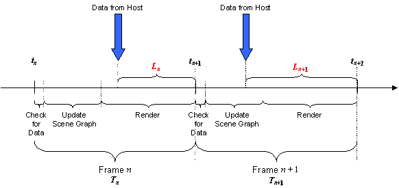

CIGI Host Emulator 3
|
CIGI Host Emulator 3 |
During asynchronous operation, the Host sends data to the IG at a predetermined rate. The message may occur in response to a system timer or some other event within the Host. The IG may in turn send messages to the Host containing IG status and mission function data; however, the interval between host messages is determined by the host itself.
Meanwhile, the IG maintains its own frame rate, which is typically bound by the vertical sync signal from the display system. During each frame, the IG first checks its buffer for incoming CIGI messages. It then updates the scene graph based on the contents of the CIGI message along with any previously defined rates and trajectories, dynamic environmental attributes, and other factors. Finally, the IG renders the scene.
Because the Host might send a message at any point during the IG’s frame, positional and other state changes might not be applied until the beginning of the next frame. This introduces a latency of up to almost one additional frame, as shown in the figure below.

Latencies Caused by Asynchronous Operation
In this example, the IG begins frame n at time tn. At some time during that frame, the IG receives a message from the Host. Because the IG has already checked for incoming data, the message is not actually read until the start of the next frame at time tn+1. By this time, the data within the message is old by a margin of Ln and will not be represented in the scene until at least tn+2, bringing the total delay to Ln + Tn+1. This may cause a noticeable lag in the scene.
Note that latency Ln+1 is larger than Ln. This "creeping" of the frame offset is a common phenomenon that occurs when the Host and IG frame rates are not exactly equal. Depending upon the direction of the creep, this will frequently cause the IG to receive either zero or two Host-to-IG messages during a frame, causing frame jitter.
To reduce the effects of lag and jitter, the IG may extrapolate positional data each frame. The IG Control and Start of Frame packets (see Sections 4.1.1 and 4.2.1, respectively) include a Timestamp parameter that the IG can use when performing the extrapolation. This parameter indicates the amount of time that has elapsed since some initial reference time. By determining entities’ velocities and accelerations from prior frames, or preferably from the Rate Control and Trajectory Definition packets (see Sections 4.1.8 and 4.1.20), the IG can calculate the probable positions of those entities during the current frame.
Because entities can be extremely dynamic, such extrapolations are prone to error. Asynchronous operation, therefore, is recommended only in low-fidelity applications or when synchronous operation is not possible.
|
© 2008 The Boeing Company |
rev 3.3.0 |